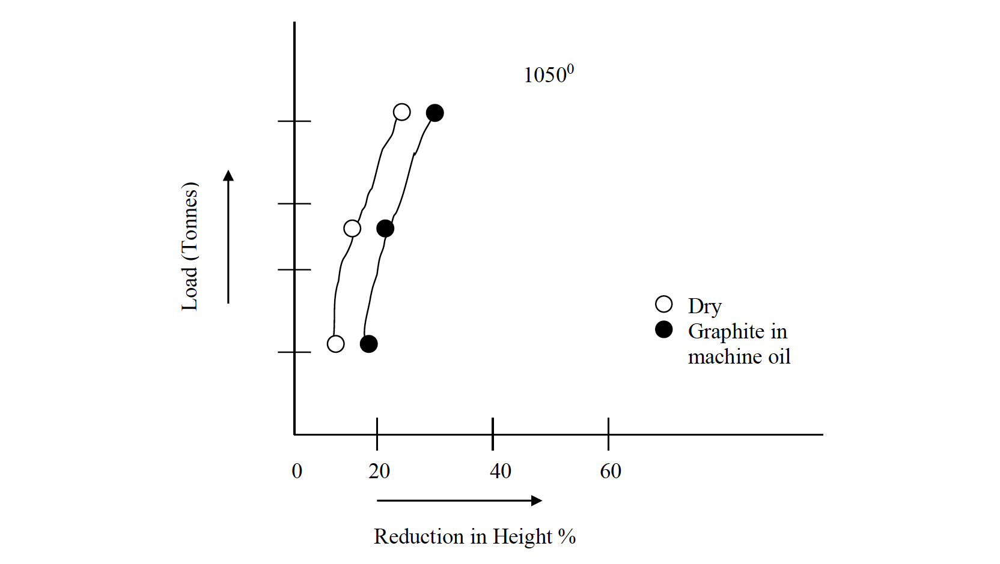
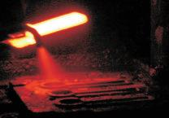
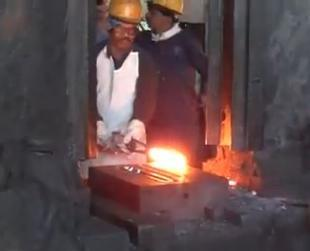
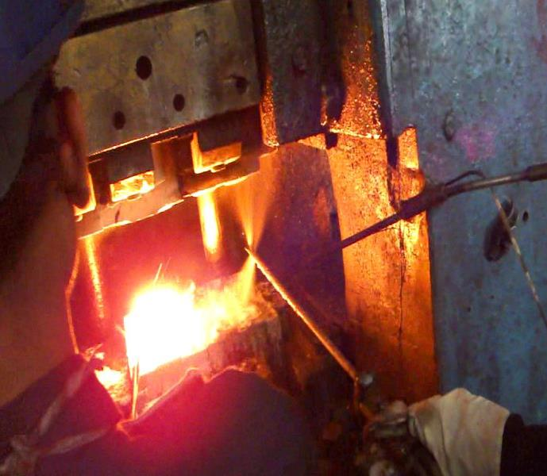
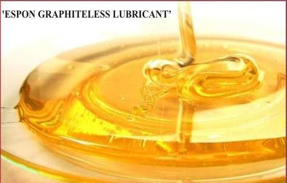
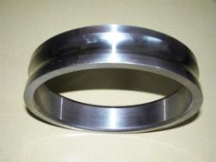
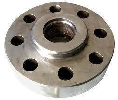
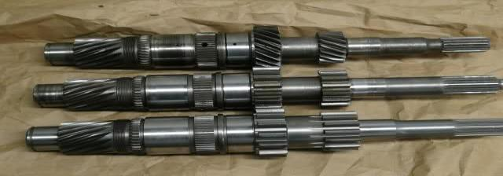
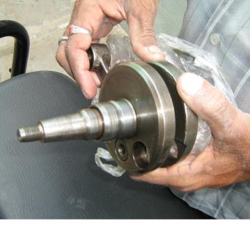

Abstract
Hot forging involves controlled plastic deformation of heated metals and alloys into desired useful shapes. It is a noble metal craft. Modern civilization cannot survive without hot forging. At the same time, without suitable forging die lubricant, economical and effective closed-die forging operation is not possible. This paper examines the requirements of a good die lubricant, compares seven types of lubricants used in the industry, and presents five industrial case studies demonstrating the cost, productivity, and environmental benefits of switching from conventional oil-based or graphite-based lubricants to graphite-free, water-soluble die lubricants.
Introduction
Hot forging involves controlled plastic deformation of heated metals and alloys into desired useful shapes. It is a noble metal craft. Modern civilization cannot survive without hot forging. At the same time, without suitable forging die lubricant, economical and effective closed-die forging operation is not possible.
In the case of closed die forging, cost of die amounts to 10% to 15% of the total forging cost. Any improvement in the forging die life would automatically result in improved productivity and profitability of the forge shop.
The following factors contribute to ensuring maximum life of a forging die:
- Correct die material.
- Correct die design, especially proper draft, corner radius and fillet.
- Appropriate heat treatment of forging die. Use of protective anti-scale coating to prevent scaling on critical surface areas of die. Nitriding of forging die.
- Reduction of friction during hot forging by the use of polished dies and suitable die lubricant.
- Correct method of application of die lubricant at appropriate intervals.
Requirements of a Good Hot Forging Die Lubricant
Basic function of any lubricant is to reduce friction between two surfaces and reduce wear. In the case of forging, a good hot forging die lubricant must have the properties listed below:
1. Minimize friction between the workpiece and the forging die
Table 1 provides a comparison of coefficient of friction for various types of lubricants used in hot forging.
| Sr. No. | Lubricant | μ |
|---|---|---|
| 1. | DRY (No Lubricant) | 0.33, 0.35, 0.35 |
| 2. | Furnace Oil | 0.10, 0.18, 0.12 |
| 3. | Graphite in machine oil | 0.065, 0.09, 0.09 |
| 4. | Graphite in water | 0.11, 0.10, 0.13 |
| 5. | Saw Dust | 0.13, 0.16, 0.17 |
Table I: Coefficient of friction for various die lubricants. Ref.: Dr. A. S. Deshpande, IIT, Mumbai, India.
2. Reduce forging load
Fig 1 shows reduced forging load by use of graphite-in-oil-based die lubricant.

Ref.: Dr. A. S. Deshpande, IIT, Mumbai, India.
3. Enable uniform metal flow to fill the die cavity
Especially in the case of critical forgings with low degrees of draft radius, die lubricants play an important role in enabling uniform metal flow such that it correctly fills the die cavity.
4. Function as a parting compound

Forging dies with low degree of draft radius usually face problems of job-sticking in the die. Special additives in the forging lubricant must ensure a mild gas generation to aid the ejection of the forging from the die after the part has been forged. However, the lubricant must neither cause an explosive effect nor generate smoke.
5. Serve as a barrier to heat transfer
Thereby maintaining the correct die temperature. The die should not gain excess heat due to continuous contact with hot billets as this will lead to faster die wear and cracking. At the same time, the die should not be subjected to rapid cooling due to excess lubrication as this will lead to die chilling effect. Forging lubricant must help in maintaining the correct die temperature by acting as a barrier to heat transfer from hot billet to forging die.
6. Prevent build up in the die cavity
Prevent build up in the die cavity due to deposit of lubricant residue in the die and cause problems such as forging underfill.
7. Lubricant must be readily removable from the workpiece

8. Avoid 'explosion' during forging
Avoid 'explosion' during forging due to rapid phase change. Sawdust, when used as a lubricant in hot forging, is known to cause a loud explosion with sparks and thus release the forging from the die. Modern lubricants can achieve the same effect without the explosion and hazard.
9. The forging die lubricant must be eco-friendly
Preferably, bio-degradable lubricants must be used. Use of polluting oils and additions like graphite in lubricants cause much damage to the environment due to smoke and dirtying the forge shop floor and surroundings.
10. The hot forging lubricant must be economical and justify its use
Method of Application of Hot Forging Die Lubricant

Lubricant is either sprayed automatically, manually or swabbed onto the hot dies.
Many installations use automatic sprays that are timed with the stroke of the forging press. Deeper cavity dies may require the use of a supplemental spray to ensure coverage throughout the die surface and cavity.
The correct amount of lubricant provides an optimum film in the die cavity to aid metal flow and to curtail heat transfer from the workpiece to the die. Excess lubricant is wasteful, dirties the area and the workpiece and pollutes the atmosphere. Excess forging lubricant may also leave residue into the dies to cause problems like forging 'underfill' and 'lap'.
Lubricant cost is less than 2% of the forging cost. Yet, use of improper lubricant can upset the forging production by way of low die life, rejections, rework, reduced productivity and customer dissatisfaction due to delayed deliveries.
Types of Hot Forging Die Lubricants
Table-II gives various types of lubricants used in hot forging.
| Sr. No. | Lubricant | Advantages | Disadvantages |
|---|---|---|---|
| 1. | Furnace Oil | The cheapest. (Costliest??) No purchase hassles. | Carcinogenic. Low die life. Dirties the die and surrounding. Highly polluting. |
| 2. | Special oil + graphite | Improves die life. | Some amount of gentle smoke is emitted. |
| 3. | Only oil, without graphite. | Suitable for brass. | Not suitable for steel. |
| 4. | Water + Common Salt | Apparently economical. | Corrosive |
| 5. | Water + Saw Dust. | Economical. | Explosion due to rapid phase change. Unsafe. |
| 6. | Water + Graphite | Improves die life. No smoke. Eco-friendly. | Graphite particles fly off and damage the electrical systems. Graphite particles accumulate on shop floor. Risk of slipping. |
| 7. | Water + Soluble Lubricant | Easy to use. No particulate settling. Improved die life. Improved productivity. Non-polluting. Most eco-friendly. | Not adequate for very large forgings. |
Table II: Types of Forging Die Lubricants
Why Graphite-Free?
Owing to development of a range of water based lubricants, polluting oils and sawdust have been largely replaced by graphite lubricants.
In the case of graphite containing lubricants, purity, particle size and special additives in the lubricant are important factors. Graphite based lubricant is popular throughout the world due to low cost. Although smoke pollution is absent during its use, certain problems are being faced by modern forging press operators. First, the graphite particles fly off and damage the electrical system. Secondly, graphite particles accumulate on shop floor and pose the risk of slipping to the people moving around. Hygiene factors such as release of particulate matter in air, release of carbon monoxide and sulfur in air are hazards that prevail during use of graphite based die lubricants.
Owing to these factors, environment friendly graphite-free, water soluble lubricants are gaining due importance compared to graphite based lubricants. Due to complete solubility in water, problem of settling of graphite is absent in the case of graphite-free die lubricants. Mild to nil agitation during use is adequate. Continuous stirring may not be necessary. Thickness of film formation on forging die is controlled by varying the dilution ratio of forging lubricant with water.

In the case of graphite-free forging lubricants, hazards like suspended particulate matter in air, release of carbon monoxide and sulfur are substantially reduced. Bio-degradable phosphate esters, soaps and organic substances contribute towards the development of eco-friendly lubricants. These special additives also possess superior lubrication characteristics compared to graphite.
Hence, in the case of small to medium sized forgings weighing up to 12 kgs., graphite-free, water soluble die lubricants have proven to perform either at par or better than graphite based die lubricants. Cost of die lubrication is proven to considerably reduce by switching over to graphiteless, water soluble die lubricants in such forgings. This is due to benefits like increased die life, reduced need for constant die grinding due to reduced die wear by the use of graphiteless die lubricants. It may be added that maintenance downtime of die lubrication systems by clogging of spray nozzles, deposition of graphite inside tanks, inside spray pumps and inside automated lubricant delivery pipes is eliminated by the use of graphite-free die lubricants.
Industrial Case Studies
Graphiteless, water soluble forging die lubricants have played a crucial role in increasing die life and increasing productivity, especially in the case of small to medium sized forgings. Productivity improvement, die life improvement and cost benefits analysis of graphiteless, water soluble die lubricant as compared to graphite based and other popular lubricants are given in following Comparison Case Studies.
Comparison Case Study I: Productivity Improvement — Forging Sleeve
Productivity Improvement due to reduced die grinding time by switching over to graphiteless, water soluble lubricant.

Results
Comparison Case Study II: Die Life Increase — Companion Flange
Die life increase by switching over to graphiteless, water soluble die lubricant from conventional oil.

Results
Comparison Case Study III: Die Life & Cost Benefit — Input Shaft
Die Life and Cost benefit analysis of graphiteless water soluble die lubricant compared to conventional oil.

Results
Comparison Case Study IV: Cost Saving — Two Wheeler Crank Shaft
Cost Saving due to graphiteless, water soluble forging lubricant.

Results
Note: Consumption per ton of graphite-free die lubricant has remained same as that of graphite based lubricant. Cost reduction is achieved due to lower cost per unit of graphiteless die lubricant.
Benefits of Using Graphiteless, Water Soluble Hot Forging Die Lubricant
Figure-2 explains how solving a problem (pollution control) simultaneously gives other benefits like cost reduction and improved customer satisfaction.
Figure 2: Benefits of a water soluble, graphiteless hot forging lubricant
Exactly How Environment Friendly Are Graphite-Free Die Lubricants?
An independent government approved laboratory has conducted tests to monitor 'Work-Zone Air Quality' in a forge shop using graphite based lubricant on one press and graphite-free die lubricant on a similar press located away from the first press. Air sample in the work-zone of each press was monitored over period of time. The analysis of average of air quality readings when using graphite based lubricant compared to that of graphiteless, water soluble lubricant is given in the following Comparison Case Study V.
Comparison Case Study V: Forge Shop (Work Zone) Air Quality Monitoring
Graphite based lubricant compared to graphiteless, water soluble forging die lubricant.
| Parameter | Factories Act 1948 Standards | Units | With Graphite | Without Graphite |
|---|---|---|---|---|
| Suspended Particulate Matter | N/S | μ g/m³ | 509 | 362 (29% Less) |
| Sulfur Dioxide | ≤ 5000 | μ g/m³ | 33.60 | 32 |
| Oxides of Nitrogen | ≤ 6000 | μ g/m³ | 42.50 | 41.00 |
| Carbon Monoxide | ≤ 50 | ppm | 8 | 3 (63% Less) |
Tested by: MITCON Consultancy Services Ltd., Pune, Maharashtra, India.
It is evident that benefits like reduced 'Suspended Particulate Matter' and substantially reduced 'Carbon Monoxide Emission' are enabled by the use of graphiteless, water soluble die lubricant. These factors lead to hygienic working condition in forge shops as opposed to highly polluted surroundings and slippery black forge shop floor. Utilization of carbon would be eliminated in the case of graphite-free, water soluble hot forging die lubricants. This fact may be harnessed to possibly claim carbon credits by Organizations that are switching over from oil based or graphite based lubricants to graphiteless forging die lubricants. However, this is yet to be explored by the forging industry at large.
Seeing is Believing
Comparison Video Links: Polluting oils against graphiteless, water soluble, environment friendly die lubricants.
How to Select the Right Type of Hot Forging Die Lubricant?
Selection of right type of hot forging die lubricant is carried out based on parameters like depth of die cavity, size and complexity of the forging, method of dispensing the lubricant onto the die, time required to complete one forging part, commitment to cost reduction and pollution control.
Though the best method of determining an appropriate lubricant and the dilution ratio of die lubricant to water is by field trials, general guidelines for selecting die lubricants for a range of forgings are provided in the 'Table of Guidelines for Selecting Correct Hot Forging Die Lubricant'.
Summary
1. Use of right type of die lubricant and correct method of dispensing the lubricant is a decisive factor in the success of closed-die forging.
2. Specially developed graphiteless, water soluble hot forging die lubricants hold promises of significant contribution towards hot forging cost reduction and progress towards environment friendly forging operation. Such lubricants are proven to be effective in forgings weighing up to 12 kgs. For heavy and complex forgings, graphite-free, water soluble lubricants may be used by calibrating the dilution ratio of die lubricant to water and lubricant application technique to suit the forging process.

S.P. Shenoy
A metallurgist from the Indian Institute of Technology, Mumbai and CEO of M/s. Steel Plant Specialities (SPS), Mumbai, India, established in 1985, engaged in the manufacture of environment friendly hot forging die lubricants and a range of protective coatings that enable cost reduction in hot forging, heat treatment and hot rolling operations.